RESPONSIVE CHECK FORK RUNTIME
実際の検証エンジンで幅375–1280pxを検査します。NG→「修正後 OK」で結果が変わります。自分のHTMLと完全なCSSを貼り付けても試せます（JS・外部CSSは実行しません）。
検査結果 viewport 375–1280px
描画プレビュー（現在幅）
VERIFIEDは対応する配置条件についての判定で、警告が0件という意味ではありません。右のブラウザ表示は別の参考プレビューです。対応できない入力はUnknownとして扱います。JavaScriptは実行しません。Lean検証は別の研究用チェッカーで、ここで自動実行するものではありません。
NEW · 初期表示に必要なCSSを抽出
上のHTML/CSSを使い、スマホ・PCのファーストビューに必要な規則を残します。配置がUnknownなら削らずに保持します。「NEW · 初期表示CSSの抽出」の例を選択すると違いを確認できます。
実際のUIでどこまで検証できたか
2026年11月22日、実際のHTML/CSSを3種類取得して検査。全3件がUnknownでした。下記のエラーはすべてCSSショートハンドの重複指定であり、画面の破綻を検出できた件数ではありません。
| 入力 | 判定 | エラー | Unknown |
|---|---|---|---|
| ポートフォリオ / About | Unknown | 3 | 33 |
| DUO瓦割り / タイトル | Unknown | 5 | 6 |
| Bootstrap / Album | Unknown | 5 | 437 |
同じ静的入力をChromium・Firefox・WebKitの各5画面幅で観測し、横はみ出しは0/45。JavaScript、外部画像・フォント、すべての幅を検証したという意味ではありません。入力・測定・再実行方法
RULE REFERENCE · 420+ CHECK CODES
veriss の検査コード(約 420 個)を役割ごとに分け、何が検査できて、何が検査できない(Unknown)かを表にしたもの。 各役割の先頭の画像は、その役割の代表例を NG(検出される書き方)と OK(直した正常系)の組で Chromium で描き、 それぞれに veriss が返した判定を並べたもの(赤い破線 = NG で指摘された箱、緑の破線 = OK の同じ箱)。OK の側はどれも verified で指摘なしになる。フォーク版 Web: https://kikutadev.github.io/veriss/ (元のカタログ: https://mizchi.github.io/veriss/)
Web版はフォーク本体のライブ検査を最初に表示する。HTML/CSS編集、NG/OK切り替え、F116・F129・F133など18例、実際の検証結果（警告・Unknown）、JavaScriptを実行しない描画プレビューを備える。ライブ検査はtools/rule-catalog/demo.mtsとrun.mtsから、build-page.mtsのesbuildでブラウザ用JSを生成する。ページ上のLean検算は実行されない。
- コードの頭文字:
E_= 誤り(多くはブラウザーでの描画や操作の失敗。10 の「仕様のみ」の行は、描画に出ないマークアップの適合性の誤り)、W_= 警告(ほぼ確実に書き間違い)、U_= Unknown(検査しなかった。成功にはしない) - 「判定」の欄: 検査可 = 静的に決まり、3 ブラウザー(Chromium・Firefox・WebKit)で実測して照合済み/一部 = 条件付きで検査し、 外れる場合は Unknown/仕様のみ = マークアップの適合性で、描画には出ない(ブラウザーの照合がない)/差を報告 = ブラウザーで結果が違うので 解析は Unknown にし、違うこと自体を警告する
- 出典: F・A〜G の番号は static-check-checklist.md、直し方の文言は
packages/adapter-core/src/lint.mjs
フォークで追加・統合したこと
このページは mizchi/veriss の13分類とNG/OK実例を引き継ぎ、kikutadev/veriss に取り込んだ変更点を併記したもの。この一覧の約420コードは静的検査のカタログであり、以下のLean研究の証明済み範囲と同一ではない。
| 領域 | このフォークでの変更 | できること・できないこと | 根拠 |
|---|---|---|---|
| TypeScript 基盤 | ランタイム・各アダプター・検証ツールのソースをTypeScriptへ移行。従来のESMパッケージは生成物として維持 | 型チェック、生成コードの一致検査を実行できる。型付けだけでCSS全域が証明されるわけではない | 移行・検証ログ |
| 状態依存CSS | hover時のCSS変数・依存先のレイアウトを追跡し、独立した状態として再検証 | 対応した有限状態は検証。依存が解析できない操作や上限超過は Unknown | 状態検証の設計 |
| Lean 4（研究） | 幾何モデル・到達状態・有限分岐・コンポーネント間の条件・限定的なCSSカスケードについて、独立チェッカーと証明書を実装 | 入力された閉じたモデルの証明書を検算する研究機能。任意のHTML/CSS/JSから完全自動で証明する機能ではなく、通常のveriss実行にも自動接続されない | Lean研究の境界と使い方 |
| 初期表示に必要なCSS | スマートフォン・PCの画面範囲を静的解析し、ファーストビュー内の要素へ影響しないと証明できたCSS規則だけを遅延読み込み側に分離 | HTML、CSS、viewportプロファイルを対象。位置がUnknown、文字サイズが未計測、状態が未確定なら規則を保持。ブラウザで実画像比較するE2E付き | 検証と制約 |
| 独立Grid/Flexモデル（L1） | 独立したZ3座標モデルでGrid/Flexの部分集合を検算。ランダム80構成の境界幅・領域で本体と比較 | 対応サブセットの証拠のみ。任意CSSの完全証明ではない | L1検算 |
| 状態変化による配置シフト（L1） | 状態前後のGrid/Flex座標から移動する箱と反例幅を導き、ブラウザ実測と比較 | L1の範囲内。複雑なアニメーション全域や任意JavaScript遷移は対象外 | 独立シフトモデル |
| フォント・プラットフォーム別文字幅 | 複数ブラウザーとフォントの実測幅を参照し、同じFlex要素でも文字幅で配置が変わる条件をZ3で検討 | Linux実測値を収録。macOS/Windowsで記録がない場合は既知の代替とUnknownを区別。未収録の文字列は対応するフォントファイルが必要 | モデルと測定 |
| 上流の新規検査 | F116〜F133（will-change、preserve-3d、text-wrap、dialog、ブラウザー別CSS、container query unitなど）をTypeScript正本とテストへ取り込み | 3ブラウザー照合を維持。挙動が異なる箇所はブラウザー差と Unknown を区別 | CSS実測一覧 |
進行中の別ブランチの実験は、この main に統合された機能として数えていない。 追加した4領域は従来のFコードとは別の検証機能で、F134以降の新規CSSミス判定を追加したという意味ではない。 Web版には上記の「初期表示CSS抽出」を操作できる入力欄がある。
全体の表
| # | 役割 | 何を見るか | 入力 | 主なコード | 検査できる | 検査しない(Unknown) |
|---|---|---|---|---|---|---|
| 1 | CSS の構文 | ブラウザーが宣言ごと捨てる値 | CSS だけ | W_CSS_*_INVALID など 16 | 構文が閉じた値(calc の空白、色、キーワード、grid のトラック…) | var() を含む値、-webkit- の値、システムフォント |
| 2 | at-rule とカスケード | 決して当たらない @media・@supports、層や順番で負ける規則 | CSS だけ | W_CSS_MEDIA_* など 14 | 範囲が空の query、不正な query・@property・@font-face、層の順 | 別ファイルの @import、query の並びで当たりうるもの |
| 3 | 効かない宣言 | 受け入れられるが何もしない宣言 | CSS + box の祖先 | W_LAYOUT_DECLARATION_INERT ほか 28 | 親の display・position・表の境界モデルなどで決まる 80 以上の組み合わせ | ブラウザーで効き方が違う組み合わせ(除外して記録) |
| 4 | セレクタ × DOM | DOM の形や状態のせいで当たらないセレクタ | CSS + DOM | W_CSS_STATE_UNREACHABLE ほか 7 | フォーカス・リンク・フォームの状態、HTML の解析が補う要素 | 動的な属性(tabindex・lang・dir・value)、外から渡される子 |
| 5 | HTML の構造と属性 | 解析で組み替わる構造、効かない属性 | HTML | W_HTML_* 3 | <p> の中の <div>、入れ子の <a>、効かない width・disabled など | DOM API で組み立てた木(React など)では構造の検査をしない |
| 6 | 配置(収まり・はみ出し) | すべての viewport 幅で箱が収まるか | CSS + box tree | E_LAYOUT_* 25、W_LAYOUT_* 28 | grid・flex・block・絶対配置の幅と高さ、トラック、文字の改行 | float、表の自動配置、bidi の混ざった rtl、行を高くする inline |
| 7 | 画像・メディア | 場所を取らない画像、歪み、srcset | HTML + CSS | E_LAYOUT_IMAGE_* ほか 12 | 幅・高さ属性、縦横比、sizes と実際の幅 | 動的な srcset・media |
| 8 | レイアウトシフトと動き | 状態の切り替え・ホバー・アニメーションで動く箱 | CSS + 状態 | E_LAYOUT_*_SHIFT、E_NOSHIFT_* ほか 17 | :hover・状態の間の位置の差、easing の行き過ぎ、CLS の上限 | 配置が Unknown の状態、色が読めないアニメーション |
| 9 | a11y: 見え方と幾何 | コントラスト、覆い、フォーカス、ターゲットの大きさ | CSS + box tree | E_A11Y_* 約 40 | 色と背景の鎖、描画順と当たり判定、フォーカスの見え方 | 回転した箱、スクロール容器の中の覆い、モデル化しない色 |
| 10 | a11y: 意味と構造 | 名前、label、alt、見出し、landmark、ARIA | HTML(+ 描画される/されない) | E_A11Y_*・W_A11Y_* 約 70 | 静的な属性と、幅ごとに描かれる要素 | 動的な aria-label・role・alt など(U_A11Y_*) |
| 11 | ブラウザー差 | 一部のブラウザーだけが効かせる書き方 | CSS | *_BROWSER_DEPENDENT ほか 6 | 差があること自体(browsers 付き) | 配置そのもの(Unknown のまま) |
| 12 | コンポーネントの境界 | セレクタがコンポーネントの外に届くか | adapter の結果 | E_SCOPE_* 5 | React・Vue・Svelte の状態と子コンポーネント | 動的な class・style・spread(U_REACT_* など) |
| 13 | 検査しないもの | 解析が扱わない入力 | — | U_LAYOUT_* 約 45 | — | 理由のコードを出し、成功にしない |
1. CSS の構文(宣言ごと捨てられる値)
ブラウザーは不正な値を宣言ごと捨て、前の値が残る。veriss もブラウザーと同じく捨てて配置する。
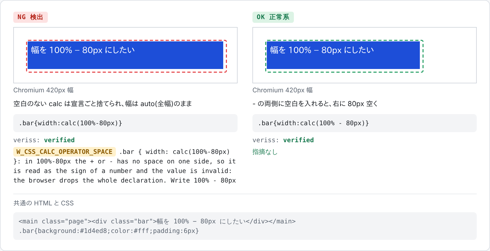
| コード | 検出すること | 判定 |
|---|---|---|
W_CSS_CALC_OPERATOR_SPACE | calc(100%-10px): +・- の両側に空白がない(F89) | 検査可 |
W_CSS_UNITLESS_LENGTH | width: 100 のような単位のない長さ(F93)。標準モードが前提 | 検査可 |
W_CSS_IMPORTANT_TYPO | !imporant など !important の綴り違い(F86) | 検査可 |
W_CSS_COLOR_INVALID | 桁数の違う 16 進、hsl(120, 100, 50) のような形の混ざった色(F107) | 検査可 |
W_CSS_KEYWORD_INVALID | display: flexbox、text-align: middle、不正な will-change(F109・F116) | 一部キーワードの集合が閉じたプロパティだけ。var()・-webkit- は見ない |
W_CSS_FONT_INVALID | 引用符のない 3D Font、size か family のない font(F99・F100) | 一部システムフォントと var() は見ない |
W_CSS_GRID_TRACKS_INVALID | repeat(auto-fill, 1fr)、minmax(1fr, …) など(F101) | 一部var()・subgrid は見ない |
W_CSS_GRID_AREAS_INVALID | 行ごとに数の違う、長方形でない grid-template-areas(F52) | 検査可 |
W_CSS_TIMING_INVALID | transition: opacity 300、知らない easing 名(F114) | 検査可 |
W_CSS_BACKGROUND_INVALID | 最後の層以外の色、位置のない / など(F115) | 検査可 |
W_CSS_VAR_INVALID | 値も代わりもない var()(計算値の時点で無効、F3) | 検査可 |
W_CSS_KEYFRAME_IMPORTANT | キーフレームの中の !important | 検査可 |
W_CSS_IMPORT_IGNORED | 先頭にない @import | 検査可 |
W_CSS_SELECTOR_LIST_VENDOR | 並びの中の -moz-・-ms- の擬似でリスト全体が捨てられる(F132) | 差を報告解析は Unknown |
W_CSS_DUPLICATE_DECLARATION | 同じ規則で 2 回書いたプロパティ(F6)。古いブラウザー向けの代わりの書き方は除く | 検査可 |
E_CSS_SHORTHAND_CONFLICT | 同じ規則の中の一括指定と個別指定(E2) | 検査可その状態の配置は解析しない |
2. at-rule とカスケード
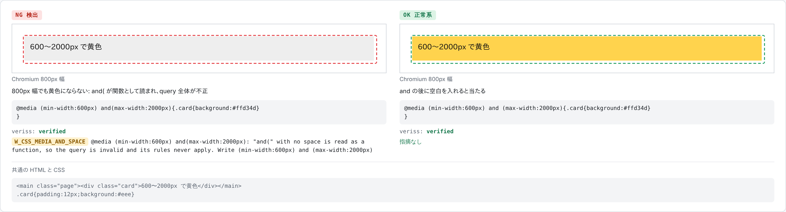
| コード | 検出すること | 判定 |
|---|---|---|
W_CSS_MEDIA_NEVER | 下限が上限より上で、どの viewport にも当たらない @media(F5) | 検査可 |
W_CSS_MEDIA_GAP | ブレークポイントの間に当たらない幅が残る | 検査可 |
W_CSS_MEDIA_VAR | @media (min-width: var(--bp)): query の中の var() は置き換わらない(F78) | 検査可 |
W_CSS_MEDIA_INVALID_LENGTH | (min-width: 600)、600 px(F79) | 検査可 |
W_CSS_MEDIA_AND_SPACE | and(・or(・not((F87) | 検査可 |
W_CSS_MEDIA_EM_ROOT | ルートの font-size を変えたページの em・rem の query(F125) | 検査可報告だけ。解析は Unknown |
W_CSS_SUPPORTS_INVALID | @supports の and( など(F110) | 検査可 |
W_CSS_PROPERTY_INVALID | 不正な @property(引用符のない syntax など。F111) | 検査可 |
W_CSS_FONT_FACE_INVALID | font-family や src のない @font-face(F113) | 検査可 |
W_CSS_LAYER_OVERRIDDEN | 詳細度で勝つのに層の順で負ける宣言(F112) | 検査可 |
W_CSS_CONTAINER_QUERY_NEVER | container のない @container、当たらない大きさ | 検査可 |
W_CSS_KEYFRAMES_MISSING | @keyframes のないアニメーション名(F1) | 検査可 |
W_CSS_COUNTER_UNUSED | どの content も読まないカウンター(F102) | 一部解析した CSS の中だけ |
W_CSS_STATE_SHADOWED | 後の規則に負けて見えない :hover・:focus(LVHA の順、F131) | 検査可 |
3. 文脈で効かない宣言
親の display、position、表の境界モデル、white-space などの文脈で、受け入れられても何もしない宣言。
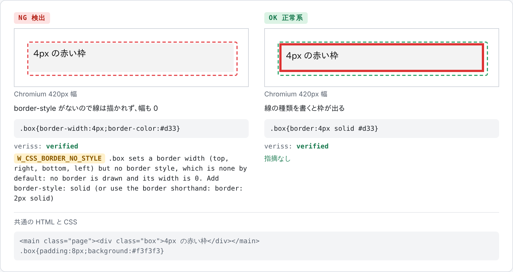
| コード | 検出すること | 判定 |
|---|---|---|
W_LAYOUT_DECLARATION_INERT | 文脈で何もしない宣言の総称。static の z-index(F7)、決まりすぎた絶対配置(F13)、画像のない background-*(F15)、inline の transform・text-align・overflow(F36・F45・F57)、表の gap・padding・border-radius(F59・F60・F94)、セルの min/max(F43)、flex 項目の clear(F54)、高さのない親の %(F55・F56)、nowrap の下の overflow-wrap・word-break(F80・F106)、col の効かないプロパティ(F108)、absolute の flex・order(F118)、ドロップダウンの option(F121) ほか 60 以上 | 検査可ブラウザーで違う組み合わせは除いた |
W_CSS_BORDER_NO_STYLE | border-style のない border-width(F14) | 検査可 |
W_CSS_PSEUDO_NO_CONTENT | content のない ::before・::after(F9) | 検査可 |
W_CSS_PSEUDO_NOT_RENDERED | img・input・select などの ::before(F32) | 一部壊れた img と checkbox はブラウザーで違うので除く |
W_CSS_ANIMATION_NO_DURATION / W_CSS_TRANSITION_NO_DURATION | 長さのないアニメーション・transition(F2・F12) | 検査可 |
W_CSS_TRANSITION_AUTO | height: auto と長さの間の transition(F8) | 検査可 |
W_CSS_TRANSITION_DISPLAY | allow-discrete のない display の transition | 検査可 |
W_LAYOUT_MIN_ABOVE_MAX | min より小さい max(F4) | 検査可 |
W_LAYOUT_AUTO_MARGIN_ABSOLUTE | 中央に寄らない絶対配置の margin: auto(F38) | 検査可 |
W_LAYOUT_CONTENTS_REMOVED | 置換要素・フォーム部品の display: contents(none になる。F30) | 検査可 |
W_CSS_MARKER_IGNORED / W_CSS_SELECTION_IGNORED / W_CSS_PLACEHOLDER_IGNORED / W_CSS_VISITED_IGNORED | 擬似要素・:visited が受け付けないプロパティ(F20・F22・F46・F47) | 検査可 |
W_CSS_BR_STYLED | <br> に書いたスタイル(F120) | 差を報告margin は Firefox、line-height は WebKit だけ |
W_CSS_ISOLATION_SELF | 混ぜる要素自身の isolation: isolate(F123) | 検査可解析は Unknown |
W_CSS_OVERFLOW_PROMOTED | 片方の軸の hidden で、もう片方の visible が auto になる(F126) | 検査可clip の組は Chromium だけ clip のままなので差を報告し、解析は Unknown |
W_CSS_CONTAINER_UNIT_VIEWPORT | container のない軸の cqw・cqh は画面の大きさ(svw・svh)になる(F133) | 検査可解析は cq* の長さで Unknown |
W_CSS_WRAP_RESTORED | nowrap の後の text-wrap: balance が折り返しを戻す(F119) | 検査可 |
W_CSS_BOX_SIZING_NOT_INHERITED | html・body だけの box-sizing(F127) | 検査可 |
W_CSS_MARGIN_PERCENT_WIDTH | 縦の margin の % は幅に対する割合(F128) | 検査可解析は Unknown |
W_CSS_DIALOG_NOT_CENTRED | リセット CSS で中央に来ない <dialog>(F129) | 検査可 |
W_LAYOUT_NEGATIVE_Z_BEHIND | 先祖の背景の後ろに回る負の z-index(F72) | 検査可 |
W_LAYOUT_MARGIN_COLLAPSE_THROUGH | 背景のある親を突き抜ける子の margin(F73) | 検査可 |
W_LAYOUT_FIXED_TRAPPED | transform などの祖先に閉じ込められた fixed(F117) | 検査可 |
W_LAYOUT_STICKY_NO_INSET / W_LAYOUT_STICKY_INERT / W_LAYOUT_STICKY_SCROLLER | inset のない sticky、動けない sticky、html と body の overflow で止まる sticky(F51) | 検査可 |
4. セレクタ × DOM
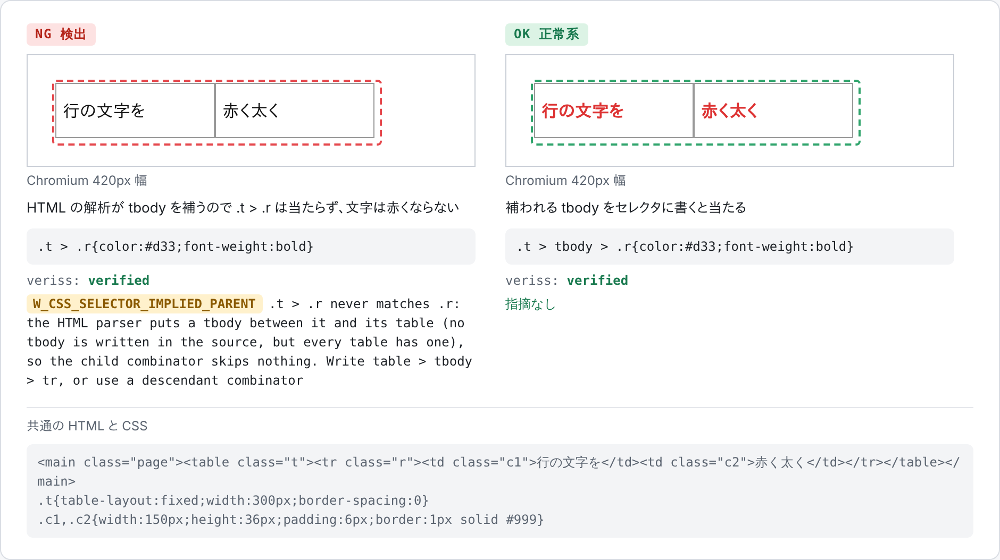
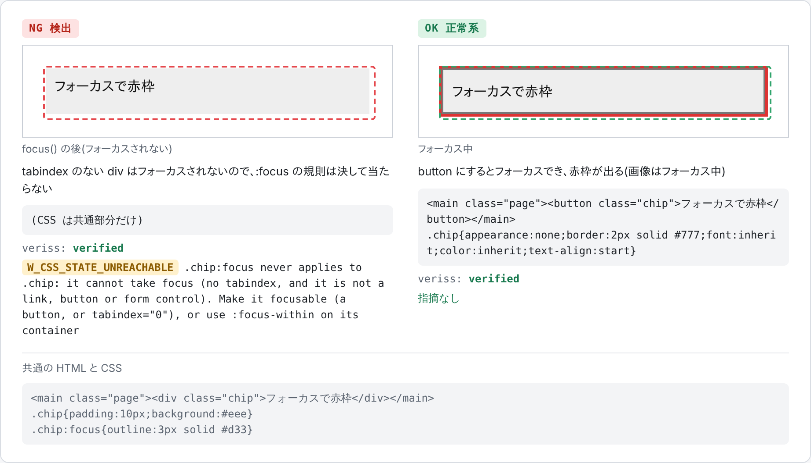
| コード | 検出すること | 判定 |
|---|---|---|
W_CSS_STATE_UNREACHABLE | 当たらない状態のセレクタ: フォーカスできない要素の :focus(F17)・:focus-within(F35)、pointer-events: none の :hover(F18)、:checked・::placeholder(F19)、:link(F48)、:placeholder-shown(F49)、:required(F50)、:read-write(F61)、:dir()(F63)、ブロック容器でない ::first-letter(F37)、リスト項目でない ::marker | 一部動的な tabindex・value・dir、外から渡される子は報告しない |
W_CSS_SELECTOR_IMPLIED_PARENT | HTML の解析が補う tbody を飛ばす table > tr、table > tr > td(F26) | 検査可HTML の解析を通るときだけ |
W_CSS_CHILD_INDEX_HIDDEN_SIBLING | template・script が数に入る :last-child(F33) | 検査可 |
W_CSS_EMPTY_WHITESPACE | 空白だけの要素の :empty(F29) | 検査可 |
W_CSS_LANG_CODE | :lang(jp) など国の符号(F62) | 検査可 |
W_CSS_SELECTOR_UNMATCHED / W_CSS_SELECTOR_RELATION | テンプレートのどの要素にも当たらないセレクタ、構造と合わない関係 | 検査可adapter が木を全部出すとき |
5. HTML の構造と属性
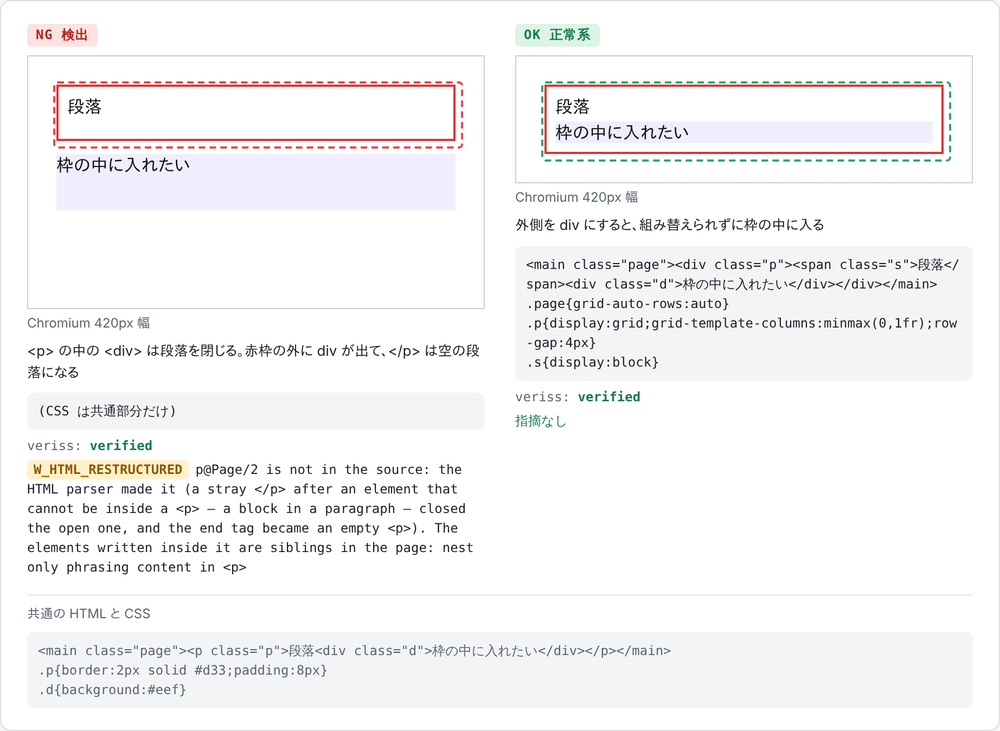
| コード | 検出すること | 判定 |
|---|---|---|
W_HTML_RESTRUCTURED | <p> の中の <div>、入れ子の <a>、表の外へ移される要素、<form> の中の <form>(F27) | 検査可ソースの位置から。React など DOM API の木は対象外 |
W_HTML_ATTRIBUTE_INERT | div の width・bgcolor など当てはまらない見た目の属性(F28) | 検査可 |
W_HTML_ATTRIBUTE_NOT_HTML | HTML に書いた indeterminate、a の disabled、checkbox の readonly、number の maxlength など(F64〜F67) | 検査可 |
6. 配置(収まり・はみ出し・重なり)
指定した viewport 幅の範囲(例: 375〜1280px)のすべての幅で、箱が割り当てられた場所に収まるかを式で解く(SMT)。 1 つでも収まらない幅があれば、その幅の例(witness)を添えて報告する。
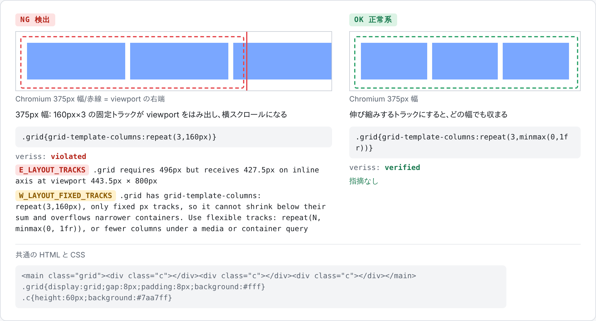
| コード | 検出すること | 判定 |
|---|---|---|
E_LAYOUT_ITEM_SIZE / E_LAYOUT_TRACKS / E_LAYOUT_CONTENT / E_LAYOUT_FIT | 項目・トラック・中身が割り当てより大きい(幅と高さ) | 検査可grid・flex・block、測った文字 |
E_LAYOUT_PAGE_OVERFLOW | viewport の幅をはみ出す | 検査可 |
E_LAYOUT_PROTRUSION / E_LAYOUT_OVERLAP / E_LAYOUT_TEXT_COLLISION | 親からの突き出し、箱・文字の重なり | 検査可 |
E_LAYOUT_ABSOLUTE_START / _END / _ALLOCATION / _CLIPPED | 絶対配置の箱が包含ブロックの外に出る、overflow: hidden で切られるメニュー | 検査可 |
E_LAYOUT_TABLE_WIDTH / E_LAYOUT_WRAP / E_LAYOUT_OVERFLOW_POLICY | 表の幅、契約(contract)と CSS の折り返し・overflow の食い違い | 検査可 |
E_LAYOUT_FLOAT / E_LAYOUT_CONTAINER | float と、解析しない種類の容器 | 拒否その中は検査しない、と報告 |
W_LAYOUT_FIXED_TRACKS / W_LAYOUT_LONG_WORD / W_LAYOUT_VW_SCROLLBAR / W_LAYOUT_FULL_WIDTH_MARGIN / W_LAYOUT_CONTENT_BOX_FULL | はみ出しの原因になりやすい書き方(px だけのトラック、長い単語、100vw、width: 100% と margin) | 検査可 |
W_LAYOUT_CLIPPED / W_LAYOUT_TRUNCATED / W_LAYOUT_LINE_CLAMPED | overflow: clip・省略記号・行数制限で切られる文字 | 検査可 |
W_LAYOUT_SCROLL_NEVER / W_LAYOUT_NESTED_SCROLL / W_LAYOUT_CONTAINER_COLLAPSE / W_LAYOUT_GRID_AREA_UNKNOWN / W_LAYOUT_ABSOLUTE_PAGE / W_LAYOUT_MARKER_HIDDEN / W_LAYOUT_INLINE_GAP / W_LAYOUT_IMAGE_BASELINE_GAP | スクロールしない容器、入れ子のスクロール、幅 0 の query 容器、知らない区画名、ページに対する absolute、隠れるマーカー、inline-block の隙間、画像の下の隙間 | 検査可 |
W_LAYOUT_HEIGHT_FIXED_TEXT / W_LAYOUT_LINE_HEIGHT_FIXED / W_LAYOUT_ROOT_FONT_FIXED / W_LAYOUT_FONT_ZOOM / W_LAYOUT_CONTROL_FONT | 文字の大きさを変えると壊れる書き方 | 検査可 |
W_LAYOUT_PHYSICAL_IN_RTL / W_LAYOUT_VH_TOOLBAR / W_LAYOUT_SAFE_AREA / W_LAYOUT_INPUT_ZOOM / W_LAYOUT_HYPHENS_NO_LANG / W_LAYOUT_BALANCE_LINES / W_TEXT_DYNAMIC_UNBOUNDED | rtl の物理プロパティ、モバイルの vh、safe area、iOS のズーム、lang のない hyphens、6 行を超える balance、上限のない動的な文 | 検査可 |
7. 画像とメディア
| コード | 検出すること | 判定 |
|---|---|---|
E_LAYOUT_IMAGE_UNRESERVED / E_LAYOUT_IMAGE_RATIO | 幅・高さ(か aspect-ratio)のない画像、ファイルと違う縦横比 | 検査可 |
W_LAYOUT_IMAGE_DISTORTED / W_LAYOUT_IMAGE_UPSCALED / W_LAYOUT_MEDIA_NO_MAX | 引き伸ばされる画像・canvas(F71)、ファイルより大きく描く画像、max-width のない画像 | 検査可 |
W_LAYOUT_SIZES_MISSING / W_LAYOUT_SIZES_SMALL / W_LAYOUT_SOURCE_SHADOWED | sizes のない srcset、実際の幅より小さい sizes、順番で負ける <source> | 一部動的な srcset・media は Unknown |
W_LAYOUT_SVG_UNSIZED / W_LAYOUT_EMBED_NO_RATIO / W_LAYOUT_LAZY_IN_VIEWPORT | 大きさのない svg、縦横比のない iframe、最初の画面の loading="lazy" | 検査可 |
8. レイアウトシフトとアニメーション
状態(ホバー、コンポーネントの状態、アニメーションの各時刻)ごとに配置を解き、入力なしに動く箱を報告する。CLS のスコアの上限も出す。
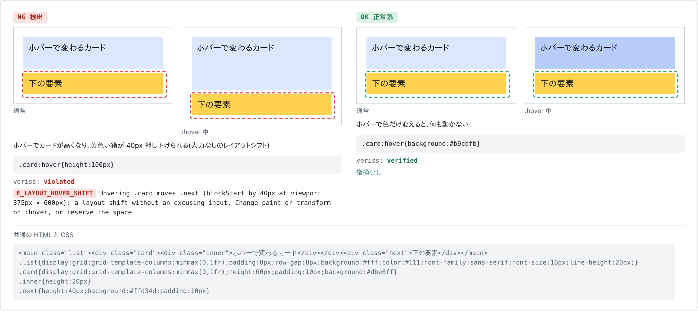
| コード | 検出すること | 判定 |
|---|---|---|
E_LAYOUT_HOVER_SHIFT | :hover で配置が変わり、ほかの箱が動く | 検査可 |
E_LAYOUT_ANIMATION_SHIFT | 配置を動かすアニメーション(easing の行き過ぎ、@starting-style、スクロール連動を含む。A1〜A5) | 検査可 |
E_LAYOUT_CAROUSEL_SHIFT | 大きさの違うスライドの切り替え | 検査可 |
E_LAYOUT_NOSHIFT / E_NOSHIFT_INLINE_START / _BLOCK_START / _INLINE_SIZE / _BLOCK_SIZE / _PRESENCE | data-noshift を付けた要素が状態の間で動く・大きさが変わる・消える | 検査可 |
W_LAYOUT_FOCUS_SHIFT | フォーカスで border-width が変わる | 検査可 |
W_LAYOUT_SCROLLBAR_SHIFT | 状態によってスクロールバーが出たり消えたりする(E1) | 検査可 |
W_LAYOUT_FONT_SWAP | web フォントの差し替えで大きさが変わる箱 | 検査可 |
W_LAYOUT_CONTENT_VISIBILITY_SIZE / W_LAYOUT_DIALOG_CLOSED_SHOWN | contain-intrinsic-size のない content-visibility、閉じても描かれる dialog | 検査可 |
U_LAYOUT_HOVER_SHIFT / U_LAYOUT_ANIMATION_SHIFT / U_LAYOUT_CAROUSEL_SHIFT / U_NOSHIFT_* | 状態の配置が決まらない、要素の対応が取れない | Unknown |
9. アクセシビリティ(見え方と幾何)
色は祖先の塗りの鎖をたどって合成し、覆いは描画順と当たり判定で、フォーカスは :focus の計算値の差で調べる。
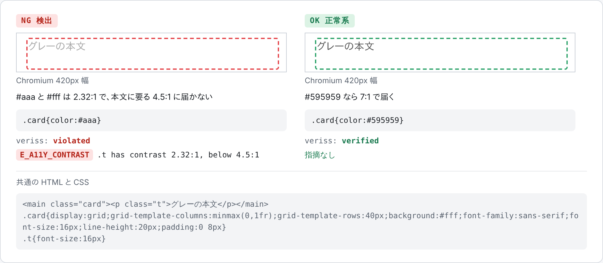
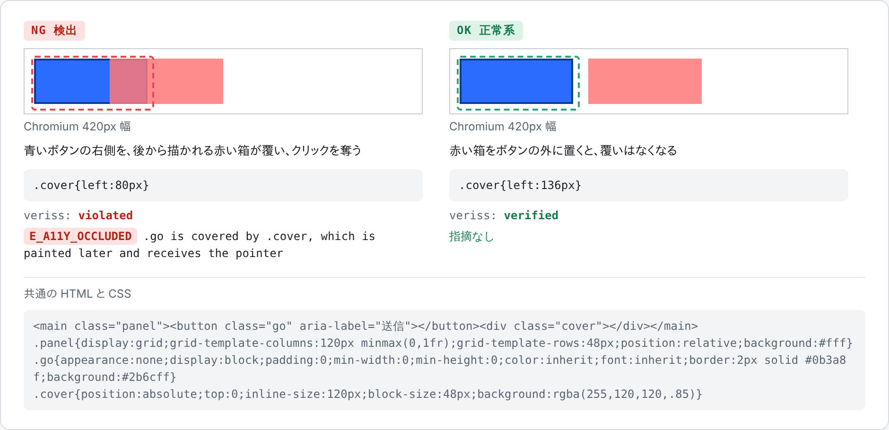
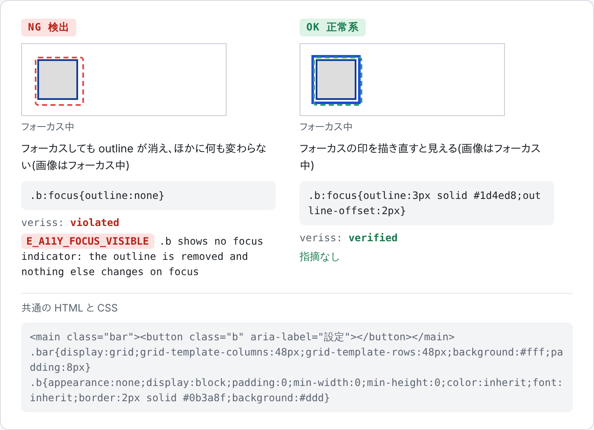
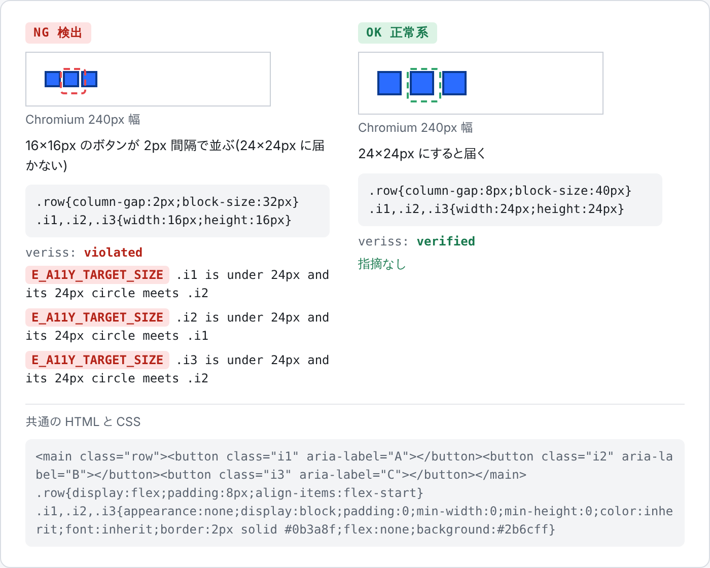
| コード | 検出すること | 判定 |
|---|---|---|
E_A11Y_CONTRAST / E_A11Y_STATE_CONTRAST / E_A11Y_PLACEHOLDER_CONTRAST / E_A11Y_ICON_CONTRAST / E_A11Y_FIELD_BOUNDARY / E_A11Y_LINK_IN_TEXT | 文字・状態・placeholder・アイコン・欄の境界・文中リンクのコントラスト | 一部読めない色・画像の背景は U_A11Y_CONTRAST など |
E_A11Y_OCCLUDED / E_A11Y_TEXT_OBSCURED / E_A11Y_TEXT_START_OBSCURED / E_A11Y_TEXT_LINE_OBSCURED / E_A11Y_TARGET_OVERLAP / E_A11Y_BEHIND_BACKGROUND | 後から描かれる箱に覆われるボタン・文字、重なるターゲット、背景の後ろに回る箱 | 一部回転した箱・スクロール容器の中は U_A11Y_ROTATED_COVER・U_A11Y_SCROLLED_COVER |
E_A11Y_FOCUS_VISIBLE / E_A11Y_FOCUS_CONTRAST / E_A11Y_FOCUS_AREA / W_A11Y_FOCUS_APPEARANCE / W_A11Y_FOCUS_TRANSPARENT / W_A11Y_FOCUS_RING_CLIPPED / W_A11Y_FORCED_COLORS_FOCUS | 消えたフォーカスの印、薄い・細い・切られるフォーカスリング | 検査可 |
E_A11Y_FOCUS_OBSCURED / E_A11Y_FOCUS_OFFSCREEN / E_A11Y_FOCUS_CLIPPED / E_A11Y_FOCUS_CLIPPED_AWAY / E_A11Y_FOCUS_SCROLLED_UNDER / E_A11Y_HOVER_ONLY / E_A11Y_CONTENTS_FOCUS | フォーカスした要素が隠れる・画面外・固定バーの下、ホバーだけで出る中身 | 一部:focus で動く位置は U_A11Y_FOCUS_POSITION |
E_A11Y_TARGET_SIZE / E_LAYOUT_TARGET_SIZE | 24×24px(AAA は 44px)に届かないターゲット | 検査可 |
E_A11Y_TEXT_RESIZE / E_A11Y_TEXT_SPACING / E_A11Y_REFLOW / E_A11Y_PAGE_CLIPPED / E_A11Y_ORIENTATION | 文字 200%、字間・行間の拡大、320px のリフロー、切られるページ、向きで消える本文 | 検査可 |
E_A11Y_FIXED_HIDES / E_A11Y_FIXED_HIDES_PART / E_A11Y_PAGE_START_UNREACHABLE / E_A11Y_SCROLL_START_UNREACHABLE / E_A11Y_SCROLL_END_COVERED / W_A11Y_FRAGMENT_UNDER_BAR / W_A11Y_BAR_COVERED / W_A11Y_BAR_TRANSPARENT | 固定バーに隠れる本文、スクロールで届かない先頭・末尾、#id の着地点 | 一部viewport の scroll-padding が外にあると Unknown |
E_A11Y_FLASH / E_A11Y_BLINK / W_A11Y_MOTION / W_A11Y_TRANSITION_MOTION / W_A11Y_SMOOTH_SCROLL | 1 秒に 3 回を超える点滅、止められない動き、reduced-motion で止まらない動き | 一部色の読めないアニメーションは U_A11Y_FLASH |
E_A11Y_POINTER_DISABLED / E_A11Y_TOUCH_ZOOM / E_A11Y_META_VIEWPORT / E_A11Y_CHECKED_INDICATOR / E_A11Y_CONTROL_HIDDEN | 押せないボタン、ズームを止める書き方、checked で見た目の変わらない部品、display: none の欄 | 検査可 |
W_A11Y_SMALL_TEXT / W_A11Y_LINE_LENGTH / W_A11Y_LINE_SPACING / W_A11Y_JUSTIFIED / W_A11Y_COLOR_ONLY_STATE / W_A11Y_FORCED_COLORS / W_A11Y_CARET_HIDDEN / W_A11Y_IMAGE_FALLBACK_CONTRAST / W_A11Y_PLACEHOLDER_CLIPPED / W_A11Y_ORDER | 小さい文字、長い行、詰まった行間、両端揃え、色だけの状態、強制色で消える縁、見えないキャレット、見た目と DOM の順の違い | 検査可 |
10. アクセシビリティ(意味と構造)
マークアップの属性と、その幅で描かれるかどうか(display: none の幅では名前がないなど)を合わせて調べる。 仕様のみ の行は描画に出ないので、lint では tier: 'spec' の警告として分けて出す。
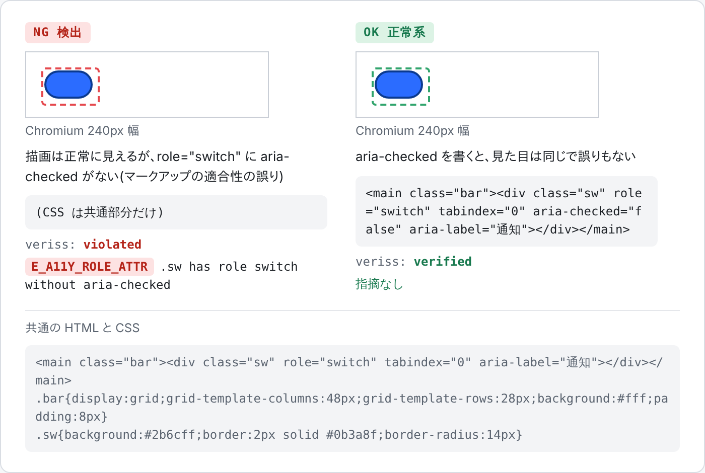
| コード | 検出すること | 判定 |
|---|---|---|
E_A11Y_NAME / E_A11Y_ICON_NAME / E_A11Y_LABEL_IN_NAME / W_A11Y_GENERATED_NAME / W_A11Y_TITLE_ONLY | 名前のない部品、アイコンフォントだけの名前、見える文字を含まない名前 | 一部動的な名前は U_A11Y_NAME |
E_A11Y_LABEL / E_A11Y_LABEL_FOR / W_A11Y_PLACEHOLDER_LABEL / W_A11Y_LABEL_POINTER / W_A11Y_FIELDSET_NAME / W_A11Y_RADIO_GROUP / W_A11Y_FORM_SUBMIT / W_A11Y_ERROR_HIDDEN / W_A11Y_INVALID_NO_MESSAGE | label のない欄、placeholder だけの label、まとまっていないラジオ、送信ボタンのないフォーム、出ないエラー | 一部動的な for・name は Unknown |
E_A11Y_IMAGE_ALT / E_A11Y_INPUT_IMAGE_ALT / W_A11Y_REDUNDANT_ALT / E_A11Y_VIDEO_CAPTION / E_A11Y_FRAME_TITLE / W_A11Y_AUTOPLAY_AUDIO / W_A11Y_ISMAP | alt・字幕・iframe の title、音の出る自動再生 | 一部動的な alt・track は Unknown |
E_A11Y_EMPTY_HEADING / W_A11Y_HEADING_ORDER / W_A11Y_PAGE_H1 / W_A11Y_P_AS_HEADING / E_A11Y_EMPTY_TH / W_A11Y_TABLE_HEADERS / E_A11Y_TABLE_HEADERS_REF / E_A11Y_SCOPE | 見出しの空・飛び・見た目だけの見出し、表の見出し | 検査可 |
W_A11Y_NO_MAIN / W_A11Y_MULTIPLE_MAIN / W_A11Y_REGION / W_A11Y_BYPASS / W_A11Y_LANDMARK_NAME / W_A11Y_LANDMARK_TOP_LEVEL / W_A11Y_DUPLICATE_LANDMARK | landmark の不足・重複・入れ子、スキップリンク | 検査可ページとして検査するときだけ |
W_A11Y_LINK_TEXT / W_A11Y_LINK_PURPOSE / W_A11Y_NEW_WINDOW / E_A11Y_FRAGMENT | 「こちら」のようなリンク文、同じ名前で行き先の違うリンク、存在しない #id | 検査可 |
W_A11Y_POSITIVE_TABINDEX / W_A11Y_TABINDEX_REMOVED / W_A11Y_FOCUS_SEMANTICS / W_A11Y_CLICK_LOOK / W_A11Y_ACCESSKEY / W_A11Y_AUTOFOCUS_* / W_A11Y_MODAL_BACKGROUND / E_A11Y_SCROLL_FOCUS / E_A11Y_ROLE_FOCUS | フォーカスの順と届き方、モーダルの背景、フォーカスできないスクロール領域 | 検査可 |
W_A11Y_LIVE_HIDDEN / W_A11Y_STATE_MISMATCH / W_A11Y_HIDDEN_OVERRIDDEN / W_A11Y_ARIA_HIDDEN_BODY / W_A11Y_NATIVE_ARIA_CONFLICT / W_A11Y_SUMMARY_INDICATOR / W_A11Y_SELECT_INDICATOR / W_A11Y_LIST_STYLE | 描かれない live region、aria-expanded と描画の食い違い、CSS に負ける hidden、三角形の消えた summary(G1) | 検査可 |
E_A11Y_HTML_LANG / E_A11Y_LANG_VALID | lang のない html、不正な言語タグ | 検査可 |
E_A11Y_ROLE / E_A11Y_ROLE_ATTR / E_A11Y_ARIA_ATTR / E_A11Y_ARIA_VALUE / E_A11Y_REFERENCE / E_A11Y_DUPLICATE_ID / E_A11Y_ROLE_CHILDREN / E_A11Y_ROLE_PARENT / E_A11Y_NESTED_INTERACTIVE / E_A11Y_PRESENTATION_CONFLICT / E_A11Y_LIST / E_A11Y_DL / E_A11Y_AUTOCOMPLETE / E_A11Y_INPUT_BUTTON_NAME / E_A11Y_HIDDEN_FOCUSABLE | WAI-ARIA と HTML の適合性 | 仕様のみ動的な role・属性は U_A11Y_* |
11. ブラウザーで結果が違うもの
解析は Unknown にし、どのブラウザーがどうするかを browsers に書いて警告する。
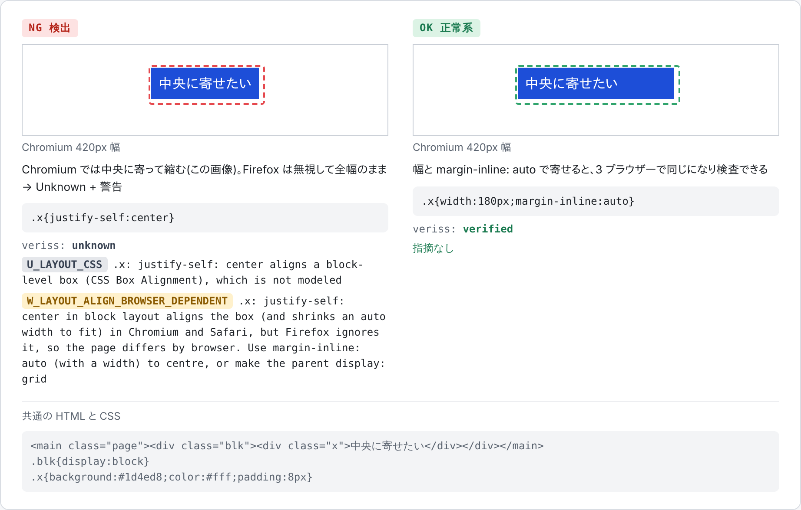
| コード | 検出すること | 判定 |
|---|---|---|
W_LAYOUT_ALIGN_BROWSER_DEPENDENT | block の justify-self・justify-items: Chromium・WebKit は寄せ、Firefox は無視(F105) | 差を報告 |
W_CSS_SIZE_BROWSER_DEPENDENT | stretch・-moz-available・intrinsic など一部だけが受け付けるキーワード(F122) | 差を報告 |
W_CSS_SCROLLBAR_WEBKIT_IGNORED / W_CSS_SCROLLBAR_FIREFOX_SHOWN | 標準のスクロールバーのプロパティと ::-webkit-scrollbar(F130) | 差を報告 |
W_LAYOUT_SELECT_INDENT | Firefox だけが select の text-indent を 2 倍にする(F124) | 差を報告 |
W_CSS_SELECTOR_LIST_VENDOR / W_CSS_BR_STYLED / W_CSS_OVERFLOW_PROMOTED | 上の 1・3 にも出したもの(OVERFLOW_PROMOTED は clip の組だけ) | 差を報告 |
12. コンポーネントの境界
React・Vue・Svelte の adapter がコンポーネントを状態ごとの箱の木にし、セレクタがコンポーネントの外へ届かないかを調べる。
| コード | 検出すること | 判定 |
|---|---|---|
E_SCOPE_OUTSIDE / E_SCOPE_REACHES / E_SCOPE_ESCAPE / E_SCOPE_CONTRACT | 外の文脈に頼るセレクタ、子コンポーネントの中を塗るセレクタ、:global・:deep、子の中の noshift | 検査可 |
U_REACT_* / U_VUE_* / U_SVELTE_* / U_STYLEX_* / U_LINARIA_* | 動的な class・style、spread、map の中身、読めないテンプレート | Unknownその部分は検査しない |
13. 検査しないもの(Unknown)
次の入力に出会うと、veriss は理由のコードを出して Unknown を返す。成功(verified)には変えない。lint では info の「not checked」行になる。
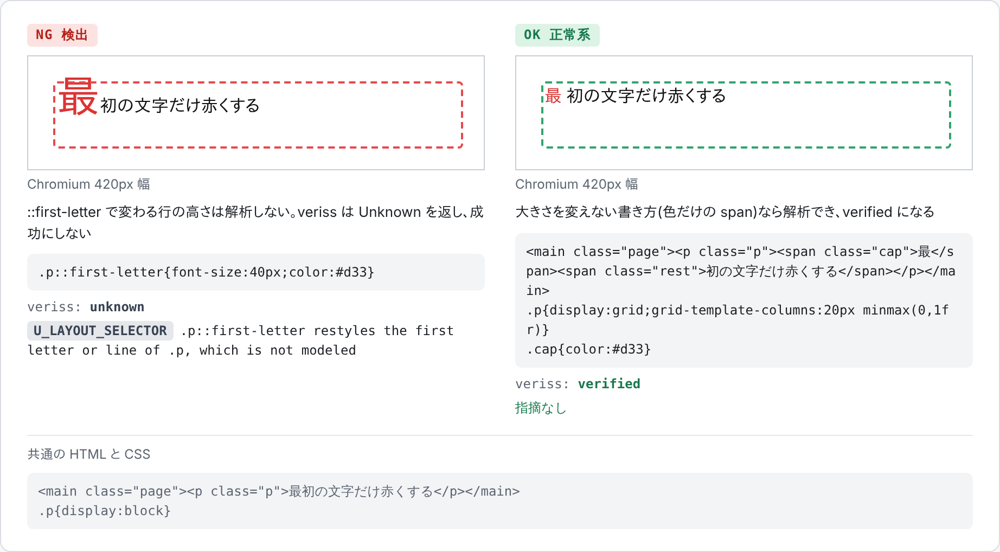
| コード | 何が理由で検査しないか |
|---|---|
U_LAYOUT_CSS / U_LAYOUT_SELECTOR / U_LAYOUT_QUERY / U_LAYOUT_LAYER / U_LAYOUT_VARIABLE / U_LAYOUT_VARIABLE_CYCLE | 扱わない CSS: 外部の @import、::first-letter・::first-line、配置を変える :focus・:link の規則、ブロック容器の段組み、mix-blend-mode、::-webkit-scrollbar、em の query、循環する変数 |
U_LAYOUT_ATTRIBUTE / U_LAYOUT_STRUCTURAL | 属性の値や兄弟の位置に頼るセレクタ(状態や結合子を含む :nth-child(… of S) など) |
U_LAYOUT_INLINE / U_LAYOUT_TEXT_METRICS / U_LAYOUT_TEXT_FONT / U_LAYOUT_INTRINSIC / U_TEXT_NOT_MEASURED | 文字の行: 行を高くする画像・vertical-align、大きさや family の違う inline、bidi の混ざった rtl、測っていない文字 |
U_LAYOUT_TABLE / U_LAYOUT_LEGEND | 表の自動配置(中身で決まる列幅)、collapse の共有の線、visibility: collapse、fieldset の legend |
U_LAYOUT_FLEX / U_LAYOUT_GRID_FR / U_LAYOUT_GRID_SHRINK / U_LAYOUT_SUBGRID / U_LAYOUT_AXES | 縮む項目どうしの重みが一定でない flex、中身の幅が分からない fr、subgrid の一部 |
U_LAYOUT_POSITIONED / U_LAYOUT_POSITIONED_OWNER / U_LAYOUT_FIXED_CONTAINED / U_LAYOUT_ABSOLUTE_ALLOCATION / U_LAYOUT_DIALOG / U_LAYOUT_POPOVER | % や rtl の relative オフセット、閉じ込められた fixed、描かれる閉じた dialog・popover |
U_LAYOUT_ELEMENT / U_LAYOUT_IMAGE / U_LAYOUT_PSEUDO / U_LAYOUT_HTML / U_LAYOUT_STRUCTURE | 大きさの adapter のない要素(<br> など)、動的な srcset、配置を変える擬似要素、文字と子要素の混在 |
U_LAYOUT_SCROLLBAR / U_LAYOUT_BROWSER / U_LAYOUT_PROFILE / U_LAYOUT_OPTIONS | スクロールバーの環境が宣言されていない、ブラウザーで測り方が違う文字、知らない設定 |
U_LAYOUT_GEOMETRY / U_LAYOUT_ANCESTOR / U_LAYOUT_COVERAGE / U_LAYOUT_LIMIT / U_LAYOUT_SOLVER / U_LAYOUT_NOT_ANALYZED | 扱わない長さ(min-content の行など)、祖先が Unknown、領域を覆いきれない、上限超過・timeout、CSS の誤りで配置を止めた状態 |
U_A11Y_*(約 30) | 動的な aria・alt・role・label、モデル化しない色、回転・スクロールの中の覆い、決まらない :focus の配置 |
配置が Unknown でも、box の style だけで決まる警告(1〜5、11 の多く)は出る(F11)。上の表の画像(セレクタ・ブラウザー差)は、 配置が Unknown のまま警告が出ている例でもある。
画像の作り方
tools/rule-catalog/examples.mjsに例の組(共通の HTML と CSS に、NG と OK の差分。文字の契約、撮る幅、ホバー・フォーカスの状態)、tools/rule-catalog/shoot.mjsが両方を veriss のanalyzeHTMLで判定し、Chromium(deviceScaleFactor 2)で並べて描いてカードにする。 画像の中の判定とメッセージは、その場で veriss が返したもの。node tools/rule-catalog/run.mjs allで判定だけを見られる- Web 版は
node tools/rule-catalog/build-page.mjs <出力先>がこの文書と画像から作る。 公開先はフォークのgh-pagesブランチ（静的生成物のみ）。GitHub Actionsは使わず手動更新する - 撮ったのは Chromium だけ。3 ブラウザーの照合は各検査の e2e(
e2e/layout-css-mistakes.spec.mjs、e2e/layout-accessibility.spec.mjsほか)が受け持つ